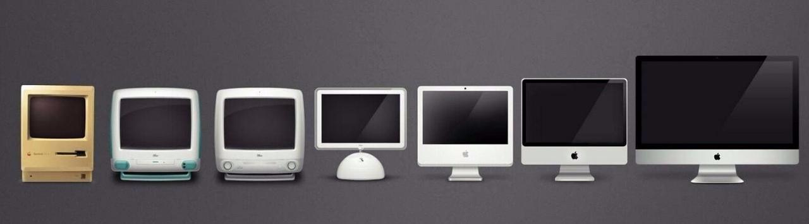

| Link | Description |
| List of computer manufacturers. | This article shows the best/most popular computer manufacturers in recent years. |
| History of Computing | This article recounts the entire history of computers. |
| 10 Most important innovations | This article explains the top 10 most important moments in the history of computing. |
| Steve Jobs Presentation (PDF 60KB) | This is a slideshow/presentation on Steve Jobs. |
| History of Early Computing | Animated video that explains how early computing worked and who it evolved into todays computing. |